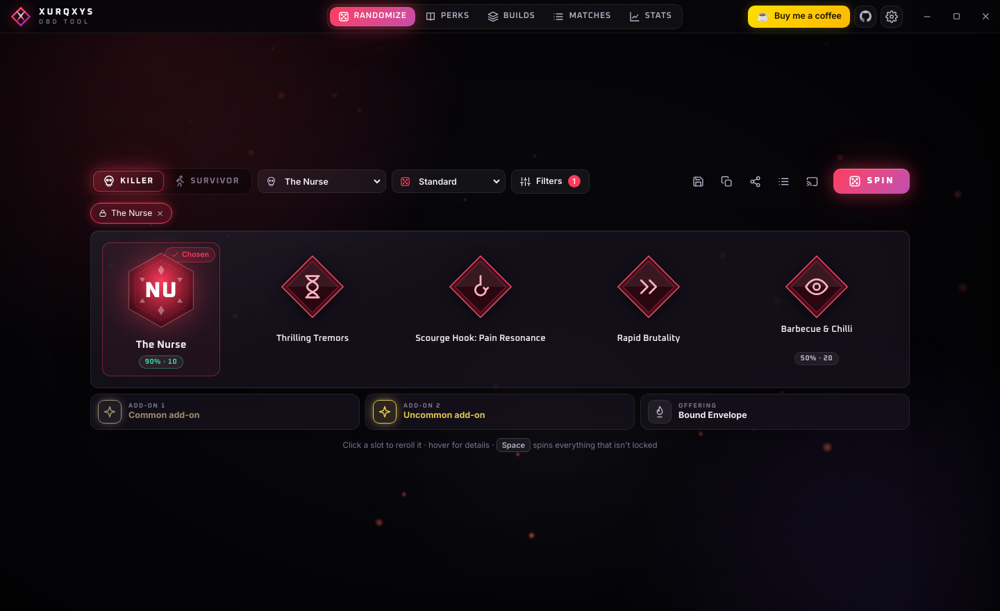
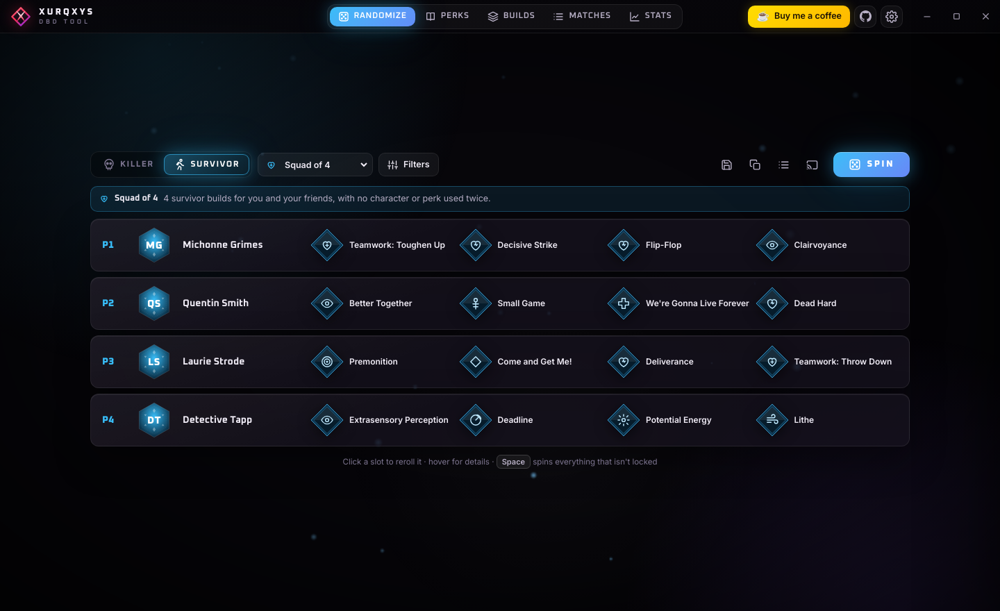
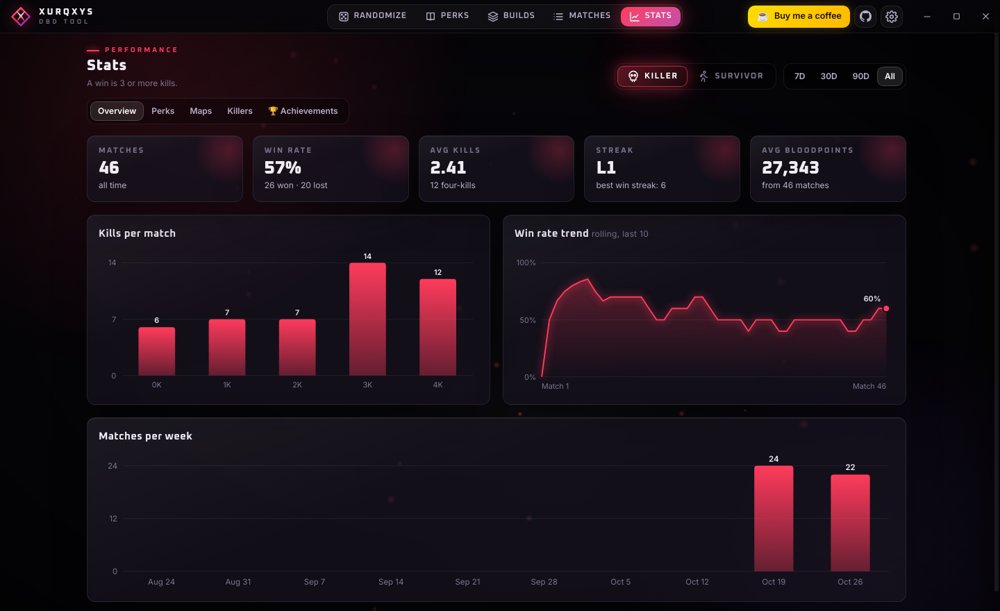
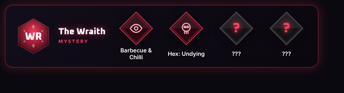

A free Dead by Daylight companion: random builds and challenge modes, a full perk database, one-click match tracking with deep stats, and a live overlay for your stream.

Built for players who are tired of running the same four perks.
Character, perks, item, add-ons and offering in one spin. Lock what you like, reroll the rest, filter by theme or by the perks you own.
Adept, No Meta, Theme Roulette, Hex Only, No Perks, Mystery and Squad of 4 for you and your friends.
Every perk, killer and survivor, searchable and grouped by category, with official icons downloaded from the DBD Wiki.
Pick 0K–4K or how you escaped and you're done. Your loadout carries over, and there's undo if you misclick.
Win rate over time, the perks that actually win you games, your best perk combos, and your best maps and characters.
24 achievements to chase, plus your real win rate for every perk and killer, right on the rolled build.
Send a short code or a ready-made image to Discord, and load your friends' builds in one click.
English, Deutsch, Español, Português and Français, with your saved data staying on your PC.
Pick a mode and spin. Squad mode rolls four builds at once with no character or perk used twice, which is perfect for SWF nights.



The tool never reads, injects into or modifies the game. It's a separate app, like a website open on your second monitor. The overlay window is a normal window and the hotkeys are ordinary Windows shortcuts.
Yes. No ads, no account, no paywall. It's a fan project and will stay free. If you'd like to support it, you can buy me a coffee ☕.
The app checks for new versions when it starts and shows an update button when one is out. Game data like add-ons and new perks updates automatically every week.
On first launch, the app downloads the official icons from the community DBD Wiki to your PC. They belong to Behaviour Interactive and aren't bundled with the app.
That's SmartScreen, which warns about new apps that aren't code-signed yet. Click More info → Run anyway.
No. Your matches, builds and settings stay on your PC. The app only goes online to download icons and game data from the DBD Wiki and to check GitHub for updates.
Windows 10 and 11, 64-bit. The installer sets itself up in one click and starts instantly every time. The portable version needs no install but unpacks itself on each start, so it opens a few seconds slower. On your phone? Get the mobile version.
Android phone or tablet. Download the app, then tap it to install (your browser asks once to allow it). Prefer not to install? Use it in your browser instead.
iPhone or iPad. There's no App Store app, but you can add it to your home screen and it works just like one — free, full-screen, offline.